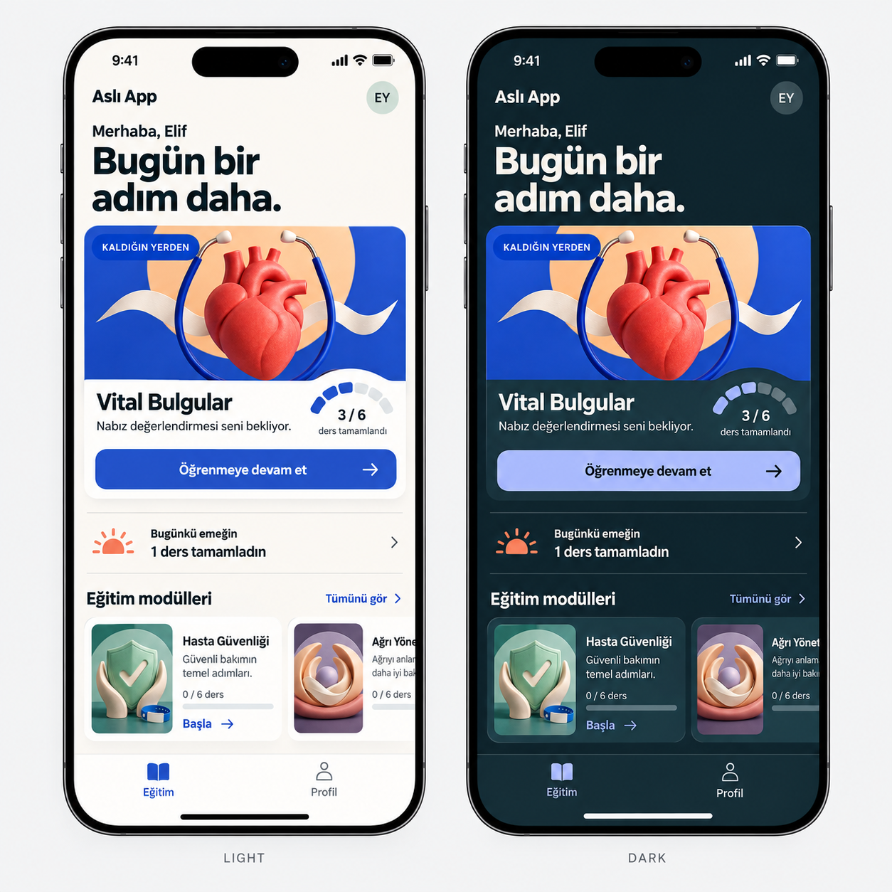
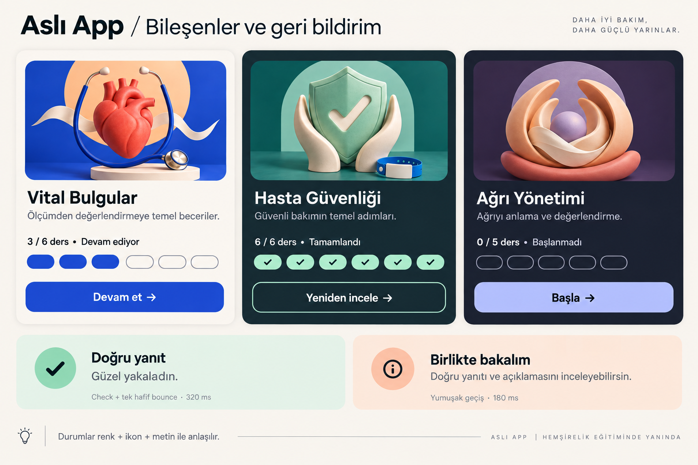
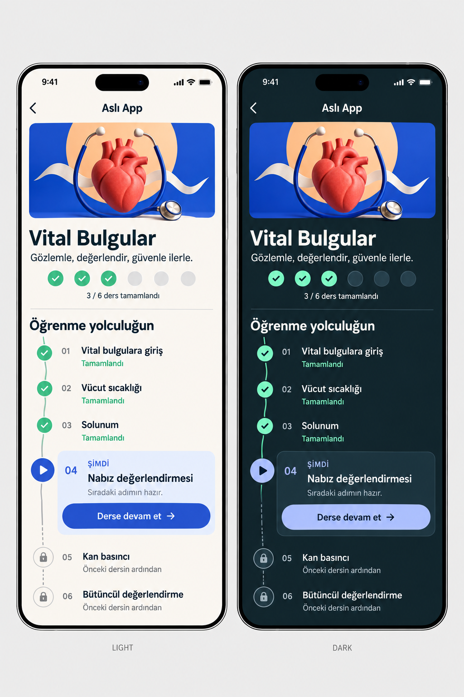
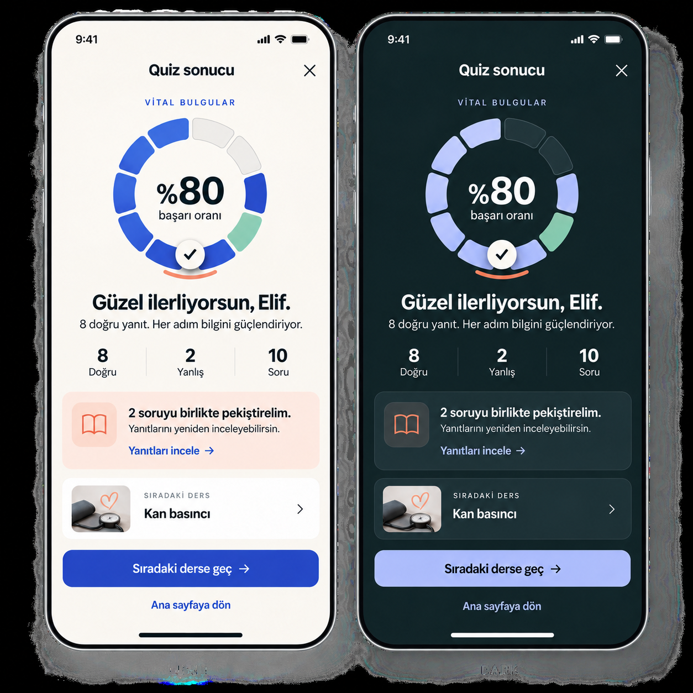
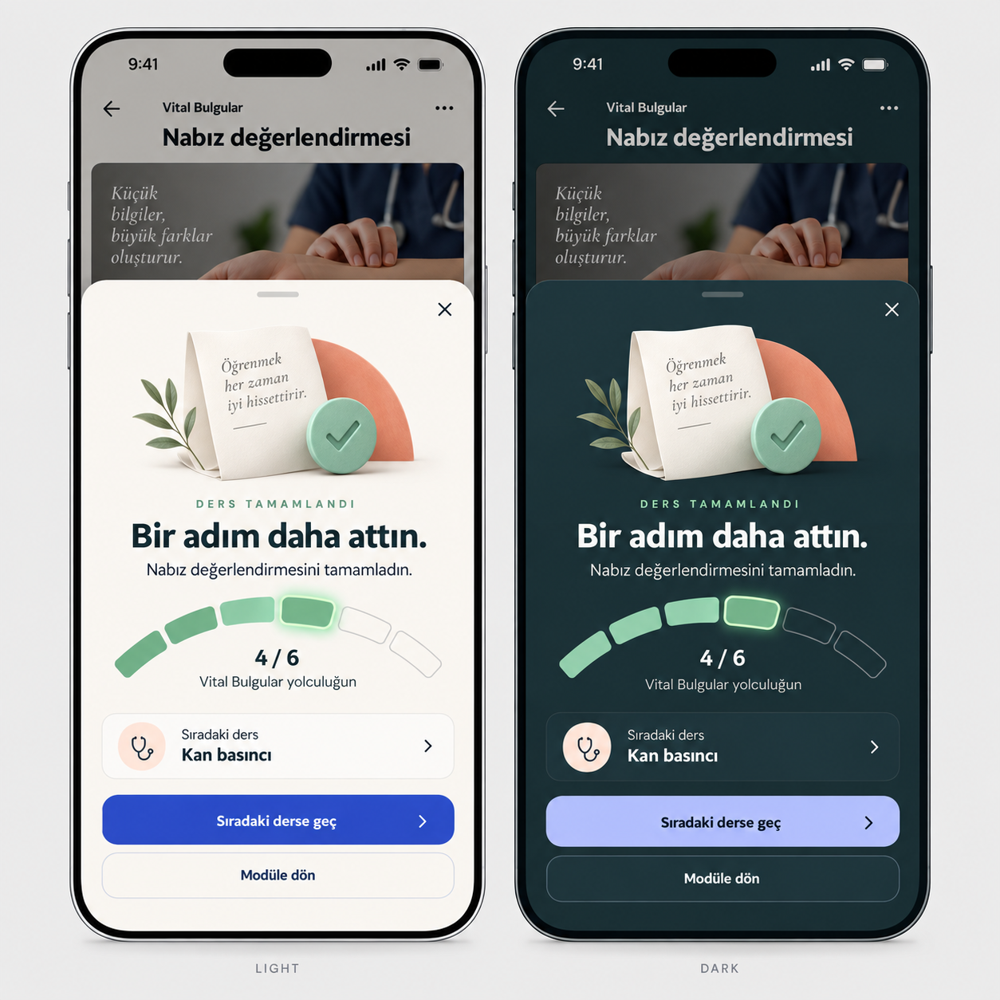
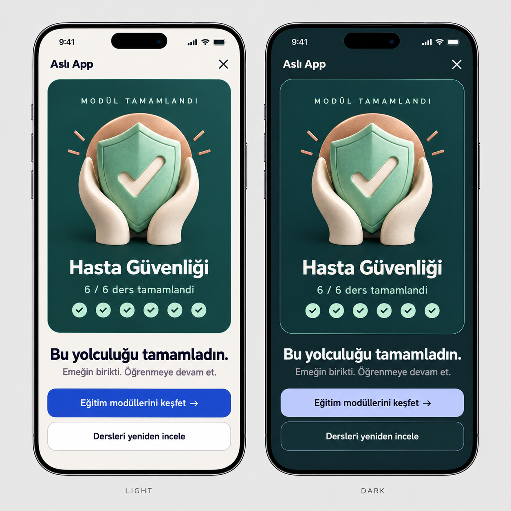

01 / EKRAN VE BİLEŞENHome
Büyük kapaklı devam alanı, günlük emek ve modül seçkisi.

02 / EKRAN VE BİLEŞENModül kartları ve cevap feedback’i
Başlanmadı, devam ediyor ve tamamlandı durumları.

03 / EKRAN VE BİLEŞENÖğrenme yolculuğu
Tamamlanan, güncel ve kilitli-sıradaki adım konsepti.

04 / EKRAN VE BİLEŞENQuiz sonucu
8/10 sonucunu görünür kılan parçalı halka.

05 / EKRAN VE BİLEŞENDers tamamlandı
Kısa başarı anı ve yeni ilerleme segmenti.

06 / EKRAN VE BİLEŞENModül tamamlandı
Modüle özgü başarı kartı ve devam daveti.
